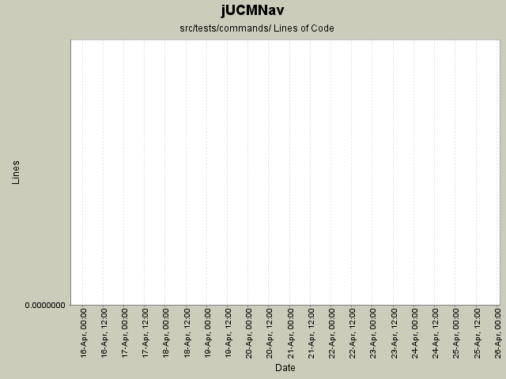

Summary Period: 2005-04-15 to 2005-04-25

Total Lines Of Code:
0 (2006-03-31 18:01)
| Author | Changes | Lines of Code | Lines per Change |
|---|---|---|---|
| Totals | 4 (100.0%) | 0 (-) | 0.0 |
| jkealey | 3 (75.0%) | 0 (-) | 0.0 |
| etremblay | 1 (25.0%) | 0 (-) | 0.0 |
Refactored a lot of packages to better reflect our strategy for the future.
Corrected some bugs to follow some guidelines we defined earlier.
Extracted the RessourceTracker class from UCMEditor.
0 lines of code changed in:
* Cleaned up CutPathCommand, ExtendPathCommand, SetConstraintCommand, SplitLinkCommand.
* They now extend JUCMNavCommand
* Added a few tests
0 lines of code changed in:
* Created General Test Suite that will run all smaller ones; this test suite should be run by cruisecontrol
* Refactored ModelCreationFactory to allow static use
* Cleaned CreatePathCommand ; now extends JUCMNavCommand and no longer references Draw2D
* Created a test case for it.
* Removed CreatePathNodeCommand which wasn't used.
0 lines of code changed in:
first attempts at autogenerated junit tests.
the code committed here will probably break the compiler; eclipse must be updated as stated here:
http://www.cis.upenn.edu/~matuszek/cit594-2004/Pages/eclipse-faq.html
0 lines of code changed in:
Generated by StatCVS 0.2.4